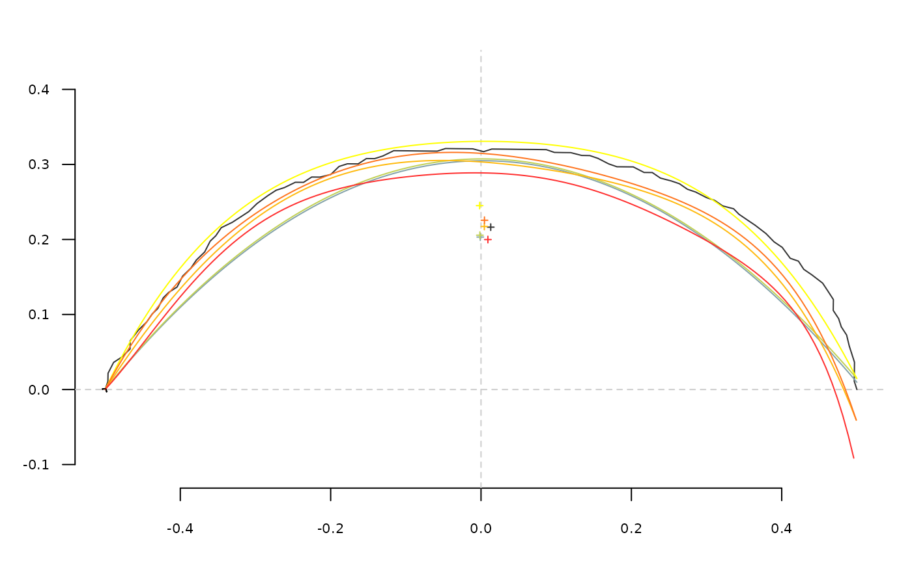

opoly_i(pol, nb.pts = 120, reregister = TRUE) npoly_i(pol, nb.pts = 120, reregister = TRUE)
| pol | |
|---|---|
| nb.pts | the number of points to predict. By default (and cannot be higher) the number of points in the original shape. |
| reregister | logical whether to reregister the shape with the original baseline. |
a matrix of (x; y) coordinates.
